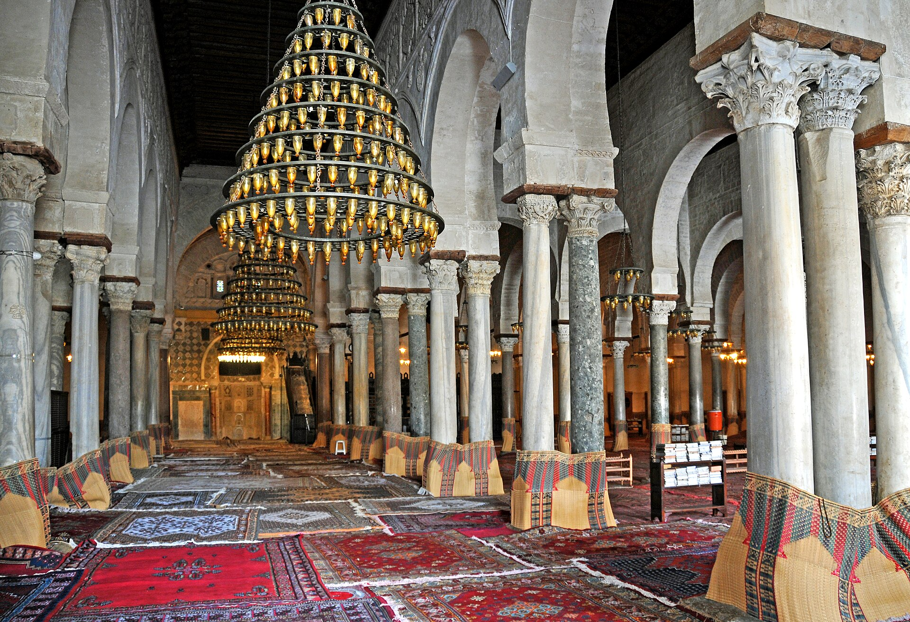
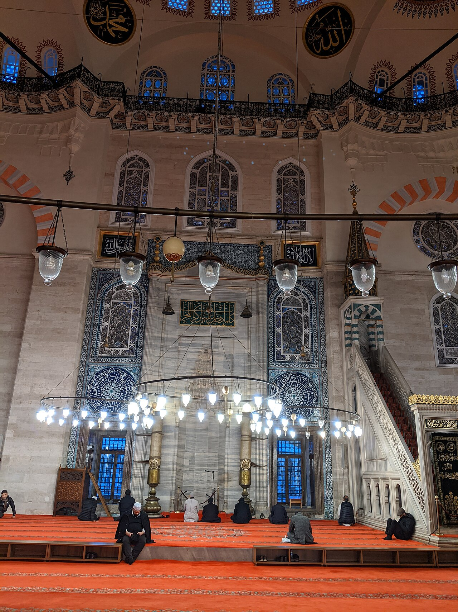
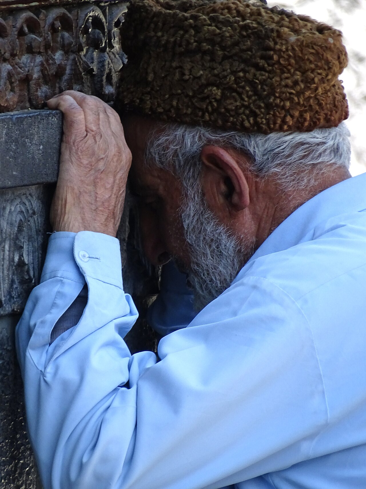
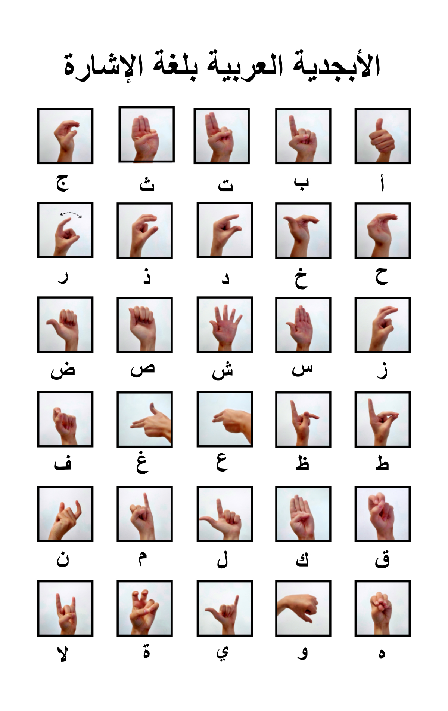
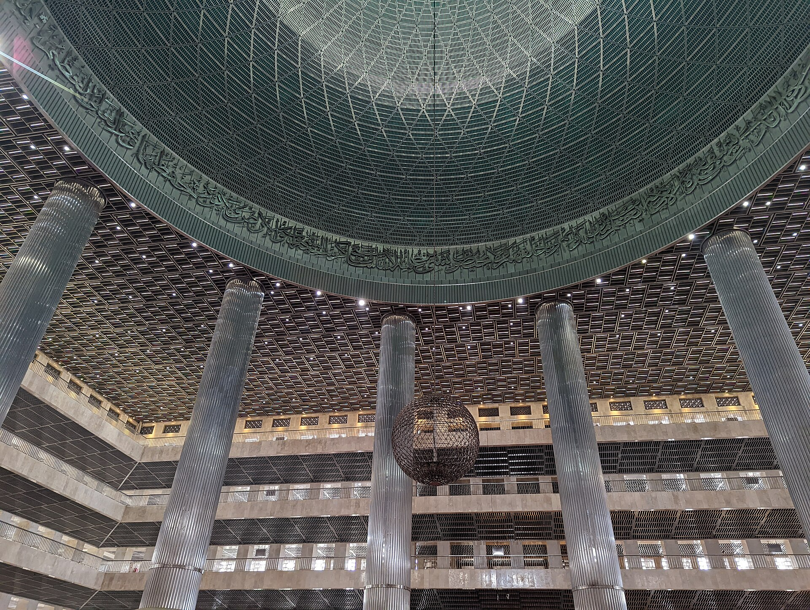

العربية لغة ثانية للأصم
لغته الأولى لغة الإشارة، والفصحى بمصطلحاتها الشرعية صعبة عليه — النص وحده لا يكفي.
تحدي الذكاء الاصطناعي في خدمة المحتوى الإسلامي 2026 · المسار الثاني
خطبة الجمعة يفهمها الجميع
مترجم إشارة رقمي بالذكاء الاصطناعي يترجم خطبة الجمعة مباشرةً إلى لغة الإشارة، ثم نصاً مكتوباً، ثم بلغة المصلي.
قريباً على iOS و Android · ويعمل على شاشة المسجد ونسخة الويب

المشكلة
لغته الأولى لغة الإشارة، والفصحى بمصطلحاتها الشرعية صعبة عليه، ولا يوجد مترجم إشارة في كل مسجد ولا في كل جمعة.
أكثر من
430 مليون
شخص حول العالم لديهم فقدان سمع مُعيق · منظمة الصحة العالمية
وفي كل مسجد
كبار السن
ضعاف سمع ومصلّون في الصفوف الخلفية ومصلى النساء لا يصلهم الصوت بوضوح

لماذا لا يكفي النص المكتوب؟
لغته الأولى لغة الإشارة، والفصحى بمصطلحاتها الشرعية صعبة عليه — النص وحده لا يكفي.
التقوى والإحسان والتوكل تُشار بطرق مختلفة، أو تُهجّى حرفاً حرفاً بالأصابع.
لا يوجد مترجم إشارة في كل مسجد ولا في كل جمعة، والطلب أكبر بكثير من العدد المتاح.
الحل
شخصية واقعية بالذكاء الاصطناعي تترجم كلام الإمام إلى لغة الإشارة مباشرةً، في مقدمة الشاشة دائماً.
نص ميسّر يتقدم مع كلام الإمام، والآيات بنصها من المصحف.
ترجمة فورية للخطبة إلى الإنجليزية والفرنسية والأردية وغيرها.
المستفيدون الصم · كبار السن ضعاف السمع · المسلمون غير العرب · الصفوف الخلفية ومصلى النساء
أين يعمل على جوال المصلي، وعلى شاشة المسجد في ركن الصم دون حاجة لإمساك الجوال
«لأن الخطبة حقٌّ لكل من يحضرها»

آلية العمل ودور الذكاء الاصطناعي
من جهاز صوت المسجد مباشرة
نموذج تعرّف صوتي عربي
تحويل الجملة إلى قواعد لغة الإشارة
توليد حركة الشخصية الرقمية
جوال المصلي وشاشة المسجد
كل إشارة يؤديها المترجم الرقمي منقولة بالذكاء الاصطناعي من تسجيل مترجم معتمد، فتبقى الإشارة صحيحة والشكل ثابتاً.
يُترجم النص إلى الإشارة ويُولَّد الفيديو قبل الجمعة ويراجعه مختص، ثم يُزامَن مع الإمام لحظةً بلحظة.
ترجمة مباشرة بتأخير ثوانٍ، والكلمة خارج المفردات تُهجّى بالأصابع وتظهر نصاً.
الموثوقية والجانب الشرعي
تُطابَق مع المصحف، والمصادر من الحزمة العلمية للتحدي.
مقارنة آلية للمعنى، وما يُشك فيه يراجعه المختص.
كل إشارة من تسجيل مترجم معتمد، ولا يُعرض فيديو خطبة مجهّزة قبل أن يعتمده.
الترجمة الآلية غير المراجعة موسومة، والنص المكتوب يرافق الإشارة دائماً.
لا لمس ولا إشعارات، وتمرير تلقائي، وخيار شاشة المسجد.
يراجعه مختص، بما فيه شكل المترجم الرقمي: واقعي أو مرسوم أو يدان فقط.
حالات الاختبار آية مقتبسة جزئياً · خروج الإمام عن النص · كلمة خارج مفردات الإشارة · ضجيج وصدى · كلام بالعامية
البنية التقنية
صوت الإمام من مكبر المسجد · نص الخطبة (اختياري) · تسجيلات إشارات من مترجم معتمد.
تحويل الكلام إلى نص · الترجمة الفورية بترجمات آيات معتمدة · تتبع موضع الإمام · الترجمة إلى لغة الإشارة · توليد فيديو المترجم الرقمي · بث لحظي.
تطبيق iOS · تطبيق Android · شاشة المسجد ونسخة الويب.
لكل خدمة حرجة بديل جاهز — يُختار أدق نموذج عربي بعد مقارنة ثلاث خدمات.
معيار النجاح
بانتظار بدء الخطبة…
من المصحف · لم تُعَد صياغتها
فيديو الإشارة والجمل الميسّرة اعتُمدا قبل الجمعة ✓
التعرّف الصوتي —
لوحة الإمام
| # | الجملة الأصلية | الجملة الميسّرة | الحالة |
|---|
مفردات الإشارة
تُسجَّل الإشارات من مترجمي إشارة معتمدين ثم تُنقل حركتها إلى الشخصية الرقمية بالذكاء الاصطناعي — فلا تُخترع إشارة أبداً. مقاطع هذا العرض مؤقتة من قاموس مفتوح؛ مرّر فوق البطاقة لمعاينتها.

الأثر والقياس
ثلاثة مؤشرات معتمدة في خطة القياس: الفهم، دقة التزامن، ودقة الإشارة بحكم مترجم معتمد — تُجمع من جلسات اختبار مع مشاركين صم وخطب مسجّلة.

نبني منبر خلال أيام التحدي، ونختبره في مسجد حقيقي، ونسلّمه منتجاً يعمل على الهواتف وشاشات المساجد.
توسيع قاموس الإشارات المعتمدة، وإضافة لغات المصلين، وتغطية خطب مساجد متعددة في بث واحد.
شراكة مع الأوقاف لرفع الخطبة أسبوعياً، وقاموس إشاري موحّد للمصطلحات الشرعية.